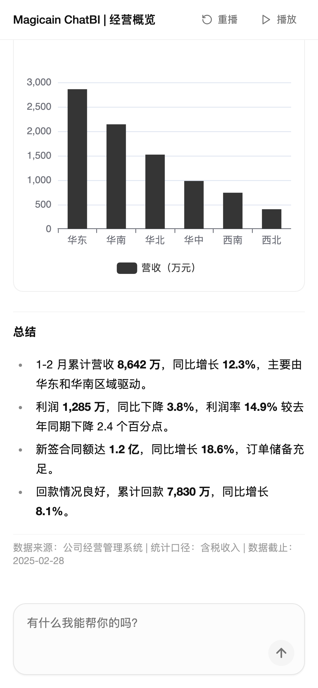
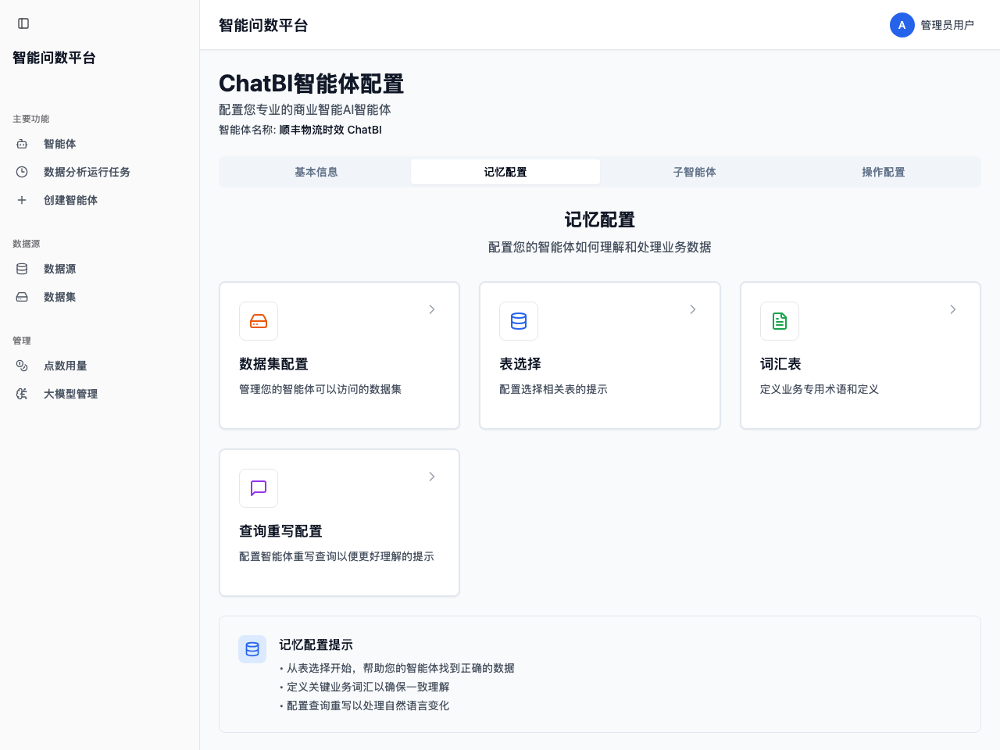
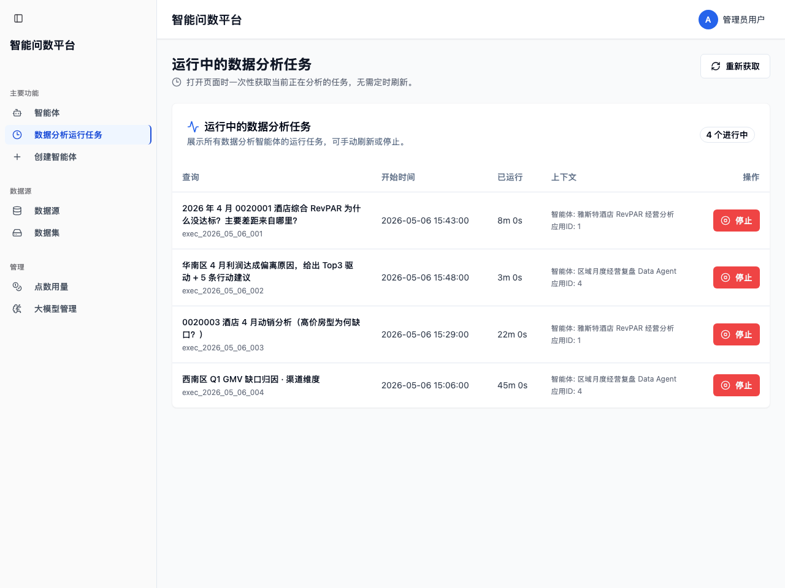
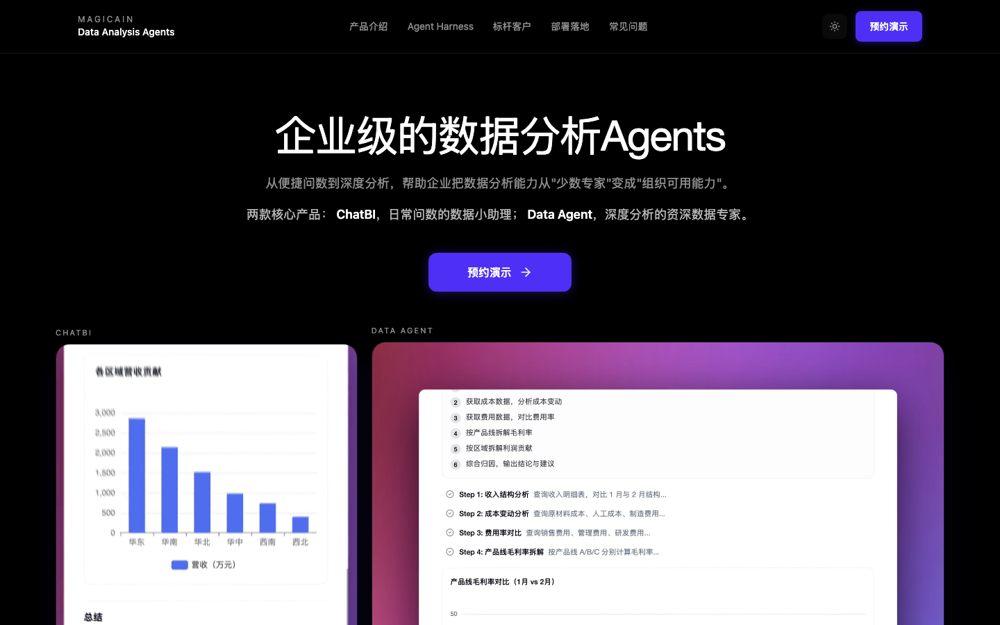
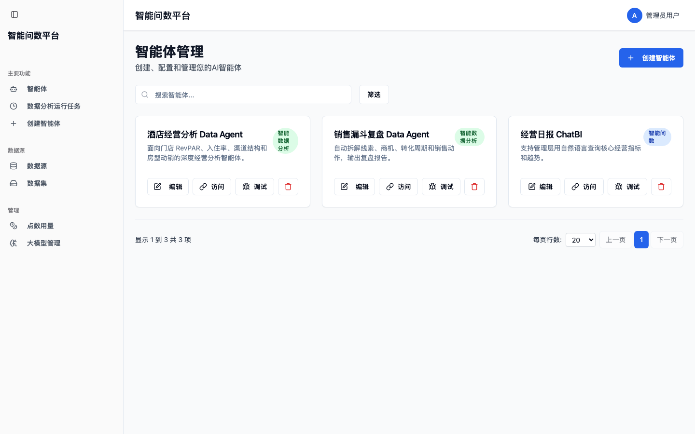
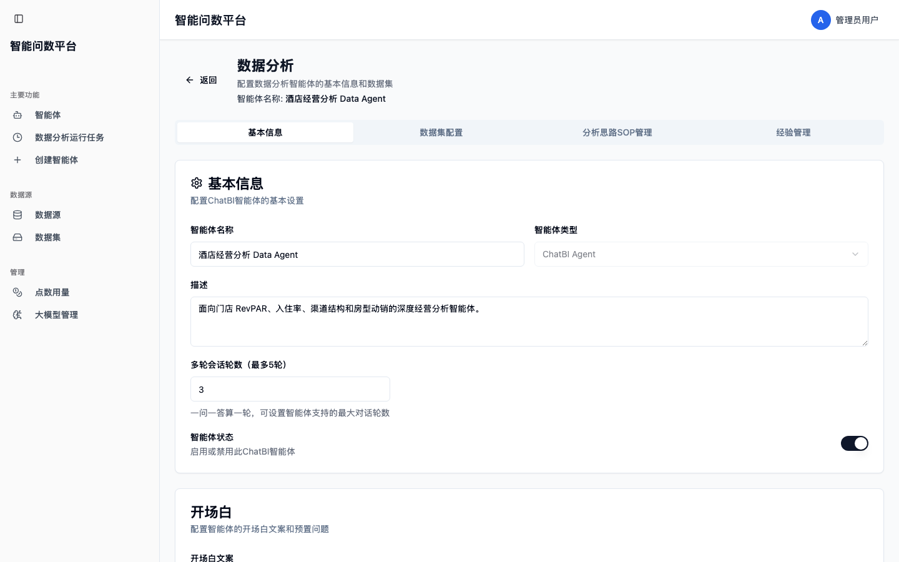
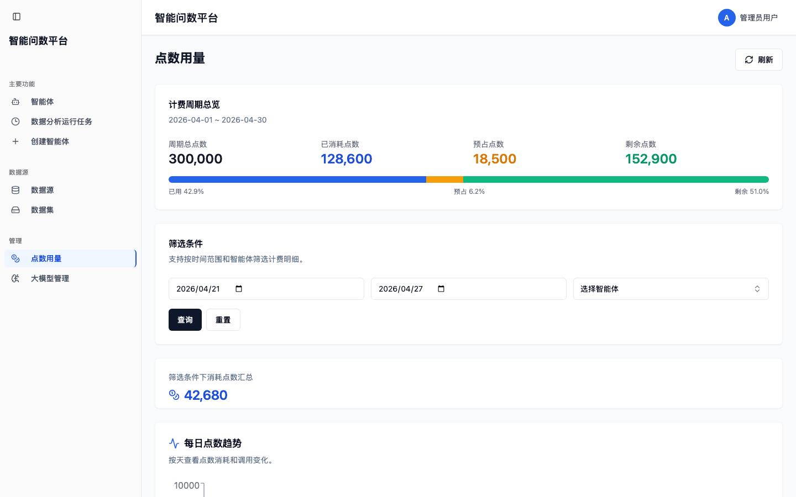

Vision / AI Native Data Analytics
AI 时代的企业数据分析
让数据走出报表与大屏
真正流到业务的毛细血管
从 BI 报表与可视化大屏，升级到 AI Native 的数据分析能力——让企业沉淀多年的数据资产真正被业务用起来。
01 · Era Shift
从看板时代
走向 Agent 时代
不是再做一块更精美的大屏。报表回答“是什么”，AI Native 的分析能力要回答“为什么、下一步做什么”——让数据从被动展示，走向主动驱动业务决策。
02 · Capability for Everyone
为每个岗位
配一位专业分析助理
分析能力不再是 BI 团队和数据科学家的专利。从经营会到区域、再到业务一线，每个人都能用自己的话提问，得到可核验的结论，推进可执行的动作。
03 · Asset Activation
让数据资产
从静态走向动态决策力
多数企业的数据投入只发挥了不到两成的价值。让 AI 把分析能力下沉到业务的每一个毛细血管——让数据真正流动起来、被用起来、转化成行动。
Page 01 / Product Matrix
数据分析场景的两类 Agent
ChatBI 把“问得到、取得准”做扎实，Data Agent 把“分析得透、推得动”做闭环；两者共享同一份数据资产与语义口径，覆盖从自助取数到正式分析交付的完整能力栈。
Layer 1 · ChatBI
智能问数
业务人员用自然语言问数 / 自动生成可执行 SQL / 图表化结果输出
NL → SQL一问一答
90%+验收一致性
5 件套交付资产
共享底座
Layer 2 · Data Agent
智能分析交付
把经营问题收成证据链 / 结构化报告 / 行动推进方案
一题一份正式交付
可复算关键 KPI
可追问证据链
Shared Foundation
词汇表 · 口径定义 · 数据集授权 · 权限边界 · 同义词与黑话沉淀
Page 02 / ChatBI · Positioning
ChatBI Agent
日常经营问数的数字 BI 工程师
它用自然语言承接经营追问、岗位取数和日常复盘，把 BI 工程师的取数、口径理解和结果解释能力，放到业务每天都会发生的问数场景里。
Part 1 · ChatBI
用户视角 · For Every Role
个性化经营问题
随时用业务语言问
管理层面对业务变化，常常要临时追问传统报表里没有的个性化数据；业务岗位缺少足够细致的报表支持，也需要把经验判断变成数据核对。
- 管理层：临时查询和分析需求，不再都依赖 BI 工程师手工查
- 业务岗位：每个岗位都像配了一位专属 ChatBI Agent，日常判断随时有数据支撑
组织视角 · Data Activation
把日常问数
变成组织数据能力
数据不再停在固定报表和少数分析人员手里；指标、维度、口径通过问答进入经营会、复盘和专项分析，让组织用统一口径持续核对事实。
- 使用方式：从看固定报表，到围绕问题连续追问
- 覆盖范围：从少数人会用，到更多岗位可用
- 资产沉淀：业务词汇、指标口径和高频问题持续沉淀
人事视角 · Workforce Efficiency
雇一位数字 BI 工程师
接住重复问数
ChatBI Agent 承接高频、重复、长尾的取数问题；BI 团队回到建模、治理和高价值分析，业务岗位从等待数据中释放出来。
- BI 团队：少做重复取数，多做建模和口径治理
- 业务岗位：少等数据，复盘和判断更快启动
- 组织扩容：不靠增编复制问数能力
Page 03 / ChatBI · Market Reality
市场上的 ChatBI 大多止步于 Demo
还远到不了“能上岗的数字员工”
POC 阶段做到约 70% 相对容易；要从 70% 走到商用 90%+——也就是让数字 BI 工程师真正在企业里上岗、独立承接业务问数——关键在于具备生产级差异能力：澄清反问、词汇表、复杂口径、回归测试闭环。
常见 ChatBI 产品
停留在 PPT 方案与 Demo 演示阶段。
- POC 准确率约 70%
- 黑话与歧义直接猜
- 缺少口径治理与问题集
- 一次性交付，难以持续
Production Ready
我们的 ChatBI
面向生产环境的完整落地方法论与交付闭环。
- 验收口径 90%+ 一致性
- 主动反问澄清，不盲猜
- 专属词汇表 + 验收问题集
- 三轮回归测试与调优
普通 BI / 报表
提供固定查询入口和报表分发。
- 需要业务记字段、记报表名
- 新需求要走需求—开发—上线
- 取数门槛高，长尾需求难覆盖
- 不解决口语 / 黑话问题
Page 04 / ChatBI · Pain Points
数字 BI 工程师想真正上岗
必须扛住这 5 件事
生产环境的真实问题，不是模型不够聪明，而是表多、词不准、概念模糊、口径复杂、方法论缺失——这 5 道关，是数字员工能否独立承接业务问数的分水岭。
痛点 01｜多表选择难度大
Demo / POC 通常不超过 3 张表，生产场景至少 10 张，多时可达 50 张；当提问涉及多个相似主题时，模型很难判定该选哪张表。
痛点 02｜口语与行业黑话
“阳光的订单现在发了多少？”“2025 年 7 月 X 线的销量？”——简称、别名、缩写、口语化表达模型很难直接对齐到字段。
痛点 03｜模糊概念理解
“上个季度湖滨店的女鞋销售情况？”——“销售情况”可能指销量、销售额、客单价、毛利，需要先澄清。
痛点 04｜复杂指标口径
“目标完成率”需要跨表取实际值与目标值，按口径过滤后再做聚合与比值计算；生产环境此类指标占比极高。
痛点 05｜方法论缺失
没有问题集、没有回归基准、没有验收口径，准确率始终说不清——这是把前四道关串起来的元痛点。
共同后果 01
Demo 漂亮 / 生产掉链子。
共同后果 02
业务不敢用、IT 不敢交付。
共同后果 03
项目反复返工，难以扩展场景。
共同后果 04
准确率始终说不清，AI 不敢规模化。
Page 05 / ChatBI · Differentiation
我们卖的不是“能演示”
而是“生产可用”
与同类产品的三个关键不一样，决定了 ChatBI 能不能从 POC 走到商用。
No.1
交付的是能上岗的数字员工
不是 Demo / 不是 PPT / 是能在企业承接业务问数的数字 BI 工程师。
- 专属词汇表与口径说明
- 验收问题集（N 条覆盖核心场景）
- 三轮回归测试与调优
- 上线培训与使用规范
No.2 · Core
专攻复杂口语 + 多表
专门解决黑话、歧义、多表与复杂口径四大生产难点。
- 多表路由与选表调优
- 实体纠错 + 同义词归并
- 歧义澄清反问（不盲猜）
- 复杂指标口径工程化
No.3
已在多家企业上岗
已落地多个私有化案例 / 数字 BI 工程师持续承接生产业务 / 可提供脱敏证据包。
- 顺丰、雅斯特、赛力斯等
- 规模、问题集覆盖、验收一致性
- 上线入口与使用方式可参考
- 验收准确率均达 90%+
Page 06 / ChatBI · Capability Map
痛点对应能力一一映射
不靠模型猜 / 靠工程化解决
每个生产难点都对应一个明确的工程化能力模块，组合起来构成 ChatBI 的生产级核心。
NL → SQL 工程化流程（占位示意 · 待补真实图）
NL 提问
业务原话
选表路由
关键词 / 别名打分
词汇表对齐
同义归并 / 维度纠错
澄清反问
多候选 → 一键确认
口径生成
分子 / 分母 / 过滤
可解释 SQL
可追溯 / 可复算
数字 BI 工程师的核心技能 → 痛点对应
01
表选择调优
关键词 / 别名 / 字段注释做工程化选表，对应多表选择难。
02
词汇表与别名体系
维度值矫正 / 同义归并 / 候选排序，对应口语黑话。
03
交互式澄清反问
多候选给候选项一键确认，对应模糊概念 / 歧义。
04
复杂指标口径工程化
分子 / 分母 / 口径 / 版本配置化，对应复杂指标。
05 · 生产级交付闭环
词汇表 + 问题集 + 回归测试 + 培训，对应方法论缺失。
不靠模型猜
关键判断靠工程化，模型只做语言理解与表达。
资产化沉淀
每次澄清、每个口径都沉淀为可复用资产。
命中率上升
用得越久，词汇表越厚，准确率越稳。
Page 07 / ChatBI · Disambiguation
不盲猜 / 让一次反问
把“业务语言”沉淀进系统
一个词可能对应多个实体或字段时，系统不直接执行取数，而是给候选项让用户一键确认，确认结果沉淀为别名资产。
澄清反问的执行流程
01
识别歧义
检测一个词对应多个实体 / 字段或多个候选维度值。
02
给候选项
按业务关键词、别名、字段注释相关度排序候选项。
03
用户一键确认
不需要业务记 SQL 与字段，只需在候选里点一下。
04
沉淀为别名资产
下次别人问同一个词，命中率直接提升。

单次确认 → 永久沉淀
一次澄清解决一类问题。
资产持续增长
别名表越用越厚。
口径可审计
维度 / 指标定义清晰可查。
命中率上升
使用时长换准确率。
Page 08 / ChatBI · Metric Engineering
把“目标完成率”这类组合指标做成配置
不是每次让模型现写
生产环境中大量关键指标是“口径定义 + 多表关联 + 聚合计算”的组合——把它们做成配置，运行时拼装出可解释 SQL。
指标口径工程化的 4 个动作
01
分子 / 分母
明确指标的两个核心数值，各自来自哪张表、哪个字段。
02
过滤条件 + 时间窗
口径下样本范围与时间窗固化进配置，可版本化管理。
03
维度粒度
到店 / 区域 / 集团粒度按需展开，统一聚合规则。
04
运行时生成 SQL
SQL 由配置自动拼装，可解释 / 可追溯 / 可复算。

“口径变更只改配置 + 跑回归即可稳定上线 / 不需要重写代码、不需要发版。”
对客户来说，口径治理从一次性工程变成可持续运营资产。
Page 09 / ChatBI · Delivery Playbook
从试点到规模化
沉淀为可复制的标准资产包
生产化交付不靠经验、不靠人；靠 5 件套标准资产，每个客户都按这套交付。
专属词汇表
指标、维度、别名、口径、字段映射，持续可迭代。
验收问题集
覆盖核心场景与关键维度组合，含期望口径与结果校验方式。
回归测试报告
三轮调优，badcase 分类与修复记录，防止效果反复。
上线培训规范
提问模板、边界与最佳实践，保证用户用得对。
交付计划
以验收口径达标为目标，按客户实际节奏调整。
验收
定义“生产可用”的问题覆盖范围（N 条）。
调优
按 badcase 分类修复（选表 / 实体 / 歧义 / 口径）。
回归
每轮修复后回归测试，防止效果反复。
沉淀
交付完成 ≠ 项目结束，资产持续运营。
Page 10 / ChatBI · Delivery Timeline
基线跑通 → 三轮闭环测试与调优
→ 上线培训 → 验收交付
典型节奏 T+0 到 T+106 左右，可按客户实际情况调整；关键里程碑都有对应的验收物。
T+0 ~ T+15
启动 + 部署
项目启动会、硬件环境调研、ChatBI 安装部署、基础功能测试。
T+0 ~ T+28
需求 + 词汇表
数据表需求、问题集示例、词汇表草案、用户提问采集与梳理。
T+28 ~ T+84
基线 + 三轮调优
初版调优 → 信息部 → 关键用户 → 种子用户，逐轮收敛。
T+91 ~ T+106
上线 + 培训 + 验收
正式上线、实操调优培训、按验收问题集完成验收交付。
第一轮 · 信息部客户内部信息部人员先发现 badcase
第二轮 · 关键用户5 人左右关键用户代表测试反馈
第三轮 · 种子用户10 人左右种子用户做最后一轮收敛
验收基准以双方确认的验收问题集为准，目标 90%+
Page 11 / ChatBI · Delivery Agent Roadmap
正在研发交付 Agent
让 ChatBI 交付从项目经验走向产品能力
交付 Agent 会基于客户的真实业务语境、数据结构、指标口径和验收问题集，对 ChatBI Agent 自动辅助调优、评测，并在交付后持续迭代。
Roadmap
交付 Agent 的闭环动作
01
理解客户业务与数据
读取客户数据表、字段说明、指标口径、业务词汇和典型提问。
02
生成调优建议
辅助完善词汇表、别名、选表规则、澄清问题和复杂指标配置。
03
自动评测与回归
围绕验收问题集跑评测，识别 badcase 类型与准确率变化。
04
持续迭代交付
上线后持续吸收新问题、新口径和用户反馈，让 ChatBI 越用越准。
把交付专家经验产品化
过去依赖交付工程师手工梳理的问题集、词汇表、badcase 分类和回归测试，逐步沉淀为可复用的 Agent 能力。
按客户真实场景调优
不是用通用 Demo 数据训练，而是围绕客户自己的业务黑话、表结构、指标口径和验收问题持续收敛。
评测结果可量化
每一轮调优都对应验收问题集、准确率变化、badcase 明细和修复记录，便于客户共同验收。
交付后继续运营
新增业务、口径调整、用户新问法出现后，交付 Agent 可以辅助推动下一轮迭代，不让效果停在上线当天。
Page 12 / ChatBI · Customer Evidence
数字 BI 工程师 已在多家企业上岗
验收口径平均 90%+ 一致性
以下为已完成生产私有化交付的代表性案例——ChatBI 作为数字员工持续承接业务问数，可提供脱敏证据包。
顺丰集团Logo Placeholder
4 大场景 · 52 指标 · 43 维度
验收 90%+ · 词汇表 + 问题集 + 录屏
雅斯特连锁酒店Logo Placeholder
13 维度 · 88 指标
14 张表 → 11 主题表 · 验收 80→90→98%
赛力斯Logo Placeholder
10+ 驾驶舱指标 · 5+ 数据表
“小赛 AI 助理”统一入口 · 一致性 95%+
物产中大物流Logo Placeholder
5 维度 · 13 指标 · 10 张数据表
统一问数入口 · 一致性 90%+
重庆宗申动力Logo Placeholder
34 维度 · 113 指标
NL 查询 + 歧义澄清 · 一致性 95%+
共同点 01
都从 60–80% 通过 3 轮调优收敛到 90%+。
共同点 02
都以词汇表 + 问题集为标准交付物。
共同点 03
都覆盖多表 + 复杂口径生产场景。
共同点 04
都成为企业内部长期上岗的数字员工。
Page 13 / Two-Agent Architecture
两类 Agent 共享同一份语义资产
不绕过既有治理与数据平台
双 Agent 共享中层语义资产，下层接入既有数据源、SSO 与审计——AI 站在治理之上，不绕过治理。
System Architecture
Layer 1 · Agent 应用层
ChatBI · 智能问数
NL → SQL · 一问一答 · 图表化输出 · 验收一致性 90%+
Data Agent · 智能分析交付
问题 → 证据链 → 结构化报告 → 行动推进方案
↕
Layer 2 · 共享语义层（企业资产）
词汇表
正式名 / 别名 / 黑话同义
口径定义
分子 / 分母 / 过滤 / 时间窗
数据集授权
主题表 / 字段映射 / DDL
权限边界
表级 / 列级 / 行级 / 租户
SOP / 经验
问题模板 / 高频复盘 / 提示
↕
Layer 3 · 数据与基础设施层（既有体系）
数据平台 / 数据库
PG / MySQL / Oracle / CK · 接口型数据源
SSO / 组织映射
对接现有鉴权与权限接口
受控执行 / 留痕
SQL · Python · SchemaGuard · 资源文件
可观测 / 审计
execId · trace · app · tenant · session
Part 2 / Data Agent · Positioning
Data Agent
懂你的业务的专业商业分析师
它承接目标差距、异常归因、经营复盘和专项优化，把专业商业分析师的问题拆解、证据组织、结论表达和行动建议能力，放到企业每一个关键经营场景里。
用户视角 · For Business Leaders
经营问题出现后
要能讲清、推得动
管理层和业务负责人看到目标差距、异常波动、区域或门店问题后，需要的不只是查数，而是让分析站得住、推进更快、结论能形成共识、报告能进入执行。
- 分析站得住：事实、推测和下钻路径能被追问
- 动作接得上：从结论走到责任角色、优先动作和跟进路径
组织视角 · Experience Replication
沉淀优秀经营经验
让经验可以复制
Data Agent 把优秀管理者和分析师处理经营问题的方法，沉淀成问题模板、证据链、报告结构和行动建议，让好经验不只停留在少数人身上。
- 方法沉淀：把高频复盘、归因、专项优化固化为标准做法
- 证据沉淀：关键 KPI、驱动项和下钻路径持续复用
- 组织复制：让区域、门店、品类、渠道都能沿用优秀经验
人事视角 · Analyst Capacity
为每个业务场景
配专业商业分析师
专业商业分析师成本高、数量少，很难覆盖所有业务场景；Data Agent 让企业能用 Agent 的方式，为不同场景配备这样的专业分析能力。
- 成本更可控：不靠大量招聘复制商业分析师能力
- 覆盖更广：目标差距、异常归因、经营复盘都能配置分析助手
- 响应更快：业务团队更快拿到能汇报、能核验、能推进的材料
Page 02 / Pain Points
很多企业不缺报表
真正缺的是一份能站得住的分析
经营问题出现后，组织最常卡住的不是“看不到数据”，而是没人能足够快地把问题说清、把判断做稳、把动作接上。
挑战 01｜分析站不住
异常看到了，但下钻路径是否合理、哪些是事实、哪些只是推测，组织里很难快速形成统一结论。
- 业务自己点报表先得出一版结论
- 一到经营会就被追问“为什么不是别的原因”
挑战 02｜推进链路慢
业务、数据、IT 多轮接力，反复取数、核口径、补材料，分析周期经常拖过最佳处理窗口。
- 问题先提出来，结论却迟迟成不了文
- 来回几轮后，经营节奏已经被拖慢
挑战 03｜结论难形成共识
同一问题，业务、区域、总部各讲一版，材料很多，但没有一份统一证据链能让大家继续核对。
挑战 04｜报告停在解释
问题找到了，但没有责任角色、优先动作和跟进路径，经营分析停在“解释层”，没有真正进入执行。
Page 03 / Product Framing
基于现有 BI 和数据平台
做完整分析与决策建议
Data Agent 不替代现有 BI 和数据平台；它基于既有数据资产、指标口径和权限边界，像一位懂业务的专业商业分析师，把问题拆开、证据拉齐、结论讲清，并给出决策建议。
现有 BI / 数据平台
提供稳定、可信、受治理的数据资产和分析基础。
- 数据模型、指标口径、权限边界
- 固定报表、趋势看板、常规查询
- 解决“数据从哪里来、口径是否一致”
Core Position
Data Agent
基于现有平台做完整分析，像懂业务的专业商业分析师一样给出判断和建议。
- 拆解经营问题、组织证据链
- 形成结构化分析报告
- 输出决策建议与行动路径
- 支持继续追问、复核和流转
不是替代关系
不重建 BI，不绕过数据平台，也不替代既有治理体系。
- 复用现有数据资产和指标口径
- 遵守既有数据权限和安全边界
- 把“数据可见”推进到“判断可用”
Page 04 / Trust Mechanism
企业最终关心的不是系统会不会回答
而是这份分析能否被核验
Data Agent 不把关键判断建立在黑盒口头推理上，而是把正确性做成一套更可复算、可追问、可治理的机制。
可信机制：从任务到结论的执行方式
01
问题模板 + 规则约束
先明确问题边界、交付目标和分析范围，避免任务一开始就失焦。
02
已授权数据集
分析边界始终以已接入、已授权的数据为准，不绕开企业现有权限体系。
03
LLM 负责规划与表达
承担任务规划、分析决策支持和结果表达，而不是直接口头生成关键数值。
04
SQL / Python / 受控工具执行
关键指标、拆解和中间结果统一在确定性执行层完成，便于复算和核对。
Principle
关键数值可复算
在相同数据快照与规则口径下，关键 KPI 与差异拆解可以被重新计算验证。
Principle
分析过程可回放
维度展开、过滤条件、样本边界和中间结果全部留痕，继续追问时不需要从头重来。
Principle
结论分层表达
系统区分数据事实、观察判断、候选原因和行动建议，不把证据不足的内容包装成根因。
Boundary
边界纪律可守住
天气、政策、会展、竞品等外部因素若未接入，只会作为候选因素，不会冒充确定结论。
Page 05 / Deliverables
企业最终拿到的不是一个回答
而是一套能在组织里流转的正式交付
Data Agent 交付的是可复算的数据结论、差距拆解、可回放过程、结构化报告和行动推进方案。
可复算的数据结论
关键指标口径清晰，差距拆解和驱动判断可以在同一数据快照下核对。
差距拆解与综合归因
沿固定路径展开到关键维度，识别主要驱动与优先判断。
可回放、可审计的过程
工作流、关键节点、输入输出和中间产物全部保留，适合继续追问。
结构化分析报告
问题、结论、驱动项、证据和建议组成一份可汇报、可转发的正式材料。
行动推进方案
不仅说明做什么，也说明为什么做、由谁推进、怎么跟进与衡量效果。
更容易过会和转发
结论与证据链一起交付，减少“各讲一版”。
减少反复对数与补材料
口径、过程与中间结果一并沉淀，不必反复重做。
报告直接延伸为动作
从发现问题走到责任角色、节奏与复盘机制。
高频分析形成 SOP
持续使用中，模板和经验规则会越做越稳、越做越快。
Page 06 / Case Step 1
案例示意：先把业务问题收敛成一条可执行任务
下面以单店月度综合 RevPAR 分析为例，展示一个经营问题如何被转成可执行、可复核的分析任务。

“2026 年 4 月，0020001 酒店综合 RevPAR 为什么没达标？主要差距来自哪里？接下来优先做什么？”
业务入口的价值不在聊天本身，而在于把问题收成可执行任务。
Task Scope
锁定对象与时间
酒店编号、分析月份、分析主题和输出目标先确定下来。
Acceptance
明确交付与验收
常见输出是差距拆解、Top3 驱动、3 至 5 条行动建议，并要求关键数值可核对。
Boundary
统一问题边界
对象范围、时间范围、样本边界先说清，后续关于“对不对”的讨论才有共同基准。
Why It Matters
先收敛，再分析
任务收敛做不好，后面分析越复杂，结果越容易讲不清。
Page 07 / Case Step 2
系统不会先给口头判断
而是先把证据链展开
关键数值沿确定性执行链路生成，关键中间结果作为证据保留下来，便于复算、复盘和继续追问。
证据沿确定性执行链路逐层展开
01
目标差距
确认目标值、实际值、完成率是否在既定口径下对齐。
02
差异指标清单
把主要差异项、方向、贡献度显性化，明确优先追的驱动项。
03
维度下钻 · 驱动排序
围绕渠道、房型、价格带、日期等维度展开，识别最主要影响因素。
04
候选原因与建议
证据强度足够时形成判断；不足时保持候选，避免过度推断。
任务规划
把问题收敛成明确的分析链路。
工具调用
关键数值由 SQL / Python / 受控工具产生。
中间结果
差异指标、驱动排序、维度下钻可以留存。
继续追问
沿原证据链继续展开，而不是重新解释一遍。
Page 08 / Case Step 3
真正交付给组织使用的
是“结论 + 证据 + 动作”的完整闭环
结构化分析报告负责把复杂问题讲清楚，行动推进方案负责把“解释问题”转成“推进动作”。
本案例中可直接用于汇报的结论
Headline
RevPAR 完成率 53.81%
目标 356.61 元 · 实际 191.89 元，差距可复算。
Drivers
差距不是单一原因
直销能力偏弱 + 高价房型动销不足共同影响。
Evidence
关键驱动可继续下钻
官渠间夜偏低 · 单房售卡比偏低 · 高价房入住率缺口。
Closure
不止停留在解释层
沉淀为行动推进方案，用于优化与后续复盘。
Document · A4
结构化分析报告封面
标题 · 关键结论 · 证据链入口 · 行动方案
脱敏 PDF 缩略
行动推进方案示意
动作 01｜先补直销能力短板
关注官渠投放、转化路径和促销节奏。
动作 02｜集中提升高价房动销
聚焦价格带、房型组合与销售策略。
动作 03｜明确责任人与跟进
责任角色 · 复盘节奏 · 效果衡量。
Page 09 / Integration & Next Step
接入、部署、安全与下一步
关键是边界清楚，再做验证
不管是 SaaS 还是私有化，分析范围都以已接入且已授权的数据集为准；最推荐的下一步，是围绕一个明确场景做一次示例验证。
Data Access
数据接入
支持 JDBC 对接 MySQL、PostgreSQL、SQL Server、Oracle、ClickHouse 等数据库，也支持接口型数据源。
Security
权限与输出
支持表级、列级、行级权限控制，可对接现有 SSO、组织映射与权限接口，支持报告预览、下载和证据包导出。
Deployment
部署边界
SaaS 更适合快速上线与标准化交付；私有化更适合数据不出域、审计留存和内网部署要求更高的场景。
Action
建议的下一步
先收集具体问题、时间范围、对象范围、核心指标、常看维度和参考报表，在同一数据快照下并跑一次。
“整个产品的价值，不在于多一个 AI 入口，而在于让关键经营分析更容易被核验、被追问、被执行。”
推荐销售动作：别先讨论抽象能力，先锁一个强场景做示例验证。
Page 10 / Product Screenshots
产品界面截图：从创建配置
到成本运营的完整管理台
以下截图来自 magicain-agent-ui：销售演示时可以直接说明，Data Agent 已经具备智能体管理、配置维护和点数用量运营能力。




Page 11 / Product Feature 01
产品特性一：从创建到运营
已经形成管理闭环
前端管理端覆盖 Data Agent 创建、数据集绑定、SOP 管理、经验沉淀、运行任务和点数账单，销售时可以把它讲成“可上线、可维护、可运营”的企业级能力。
Admin Console · 管理闭环模块图
智能体管理
按模板创建 Data Agent / ChatBI；编辑、访问、调试，从 PoC 平滑过渡正式上线。
数据集 · 语义资产
数据源 / 表 / 字段 / 维表 / DDL 导入，与企业已有数据资产对齐。
SOP · 经验沉淀
维护分析 SOP、业务标签、经验提示，把资深方法变可复用能力。
运行任务
运行中列表、可停止任务、execId 留痕，支撑上线后的日常运营。
点数账单
周期总览、每日趋势、场景消耗，AI 成本说投入产出。
优势 01：交付后不是黑盒，客户能持续配置和维护。
优势 02：企业经验不会只停留在人脑和文档里。
优势 03：运行异常和成本变化可以被管理层看见。
优势 04：销售 PoC 可从单场景自然扩展到多场景。
Page 12 / Product Feature 02
产品特性二：关键分析链路
由受控工具执行，不靠模型口算
后端 Data Agent 会把用户问题转成可追踪的执行任务，通过数据库查询、Python 分析、子任务拆解和报告生成完成交付；大模型负责规划与解释，关键数据处理交给受控工具。
Task Execution Architecture · 占位示意（待补真实架构图）
用户问题
问题模板 + 范围 + 验收项
LLM 规划
任务拆解 / 工具选择 / 表达
受控工具路由
SQL · Python · Web Search
结构化报告
结论 + 证据 + 行动方案
↓
SchemaGuard
未确认 Schema 阻断 SQL
资源文件 (CSV)
关键数据持久化 / 可复算
子任务并行
复杂问题拆 → 汇总
execId · trace 留痕
可停止 / 可回放 / 可审计
Task Runtime
异步任务 · 过程回放
每次分析有 executionId / 可查询状态与资源产物 / 运行中可停止，避免失控长任务。
Trusted Data
取数前先确认 Schema
查询 Agent 先确认表 + 字段；SchemaGuard 拦未确认 SQL；结果存 CSV 可复算。
Analysis Tools
Python · 搜索 · 子任务
Python 处理计算图表；Web Search 按应用开关；复杂问题拆并行子分析再汇总。
Page 13 / Product Advantage
产品优势：不是单个 Agent
而是可治理、可集成、可运营的企业能力
销售重点可以从“AI 会分析”升级为“企业能放心上线”：权限、租户、成本、开放 API 与可观测链路都有产品支撑。
PC · 管理端
执行链路 / Trace 视图
execId · 子任务时间线 · 资源产物 · 上下文 (app / tenant / user)
4:3 · magicain-agent-ui
Governance
权限边界对齐客户现状
数据集、字段、接口型数据源、鉴权方式都有管理入口，可与客户已有权限体系映射。
Observability
过程可追踪，便于审计
执行链路记录 app、tenant、user、session、trace 等上下文，结合产物可回到过程。
Cost Control
点数账单让 AI 成本可运营
后端预占 / 结算 / 释放，前端周期 / 趋势 / 场景消耗，便于给管理层说投入产出。
Integration
开放能力嵌入业务系统
已有开放查询接口、H5 入口与 MCP 通道雏形，可围绕门户、驾驶舱、工作台做集成。
CIO：边界、审计、成本和集成都能说明白。
业务：不只给答案，也给证据、报告和动作。
数据团队：保留 Schema、SQL、CSV 和报告产物。
销售：更容易从 PoC 过渡到正式采购。
Appendix A / Positioning FAQ
附录：定位类高频问题
适合在客户问到“你们到底是什么”“为什么不是直接用 BI / Copilot”时展开。
Q1｜你们到底是什么？
不是 BI 替代品，而是基于现有 BI 和数据平台的专业商业分析师。
BI 和数据平台提供可信数据、口径和权限边界；Data Agent 基于这些资产完成完整分析和决策建议。
Q2｜是不是聊天机器人？
聊天只是入口，交付才是价值本体。
真正价值在于把问题收敛成任务，再形成证据链、结构化报告和行动方案。
Q3｜是不是在替代分析师？
更准确地说，是补位和标准化。
分析人力不足时补能力；成熟团队场景下，价值转向标准化沉淀、过程留痕和提速。
Q4｜为什么不用通用大模型 + BI Copilot？
能力组件不等于企业级交付闭环。
企业真正买单的是任务收敛、授权边界、确定性执行、证据留痕、结构化交付与治理审计。
Appendix B / Trust & Boundary FAQ
附录：可信度与边界类问题
回答重点不是“永远更对”，而是“更不容易错，也更容易被发现错并纠正”。
Q5｜你怎么证明分析得更对？
靠机制，而不是靠口头承诺。
关键数值由 SQL / Python / 受控工具生成；证据不足的只列候选因素；最稳妥的验证方式是在同一份数据上并跑。
Q7｜大模型会不会幻觉？
会，所以关键数值不交给大模型口头生成。
LLM 主要负责任务规划、语言组织和辅助表达，工程设计重点是降低幻觉对关键结论的影响。
Q8｜为什么应该相信你们的归因？
归因是分层表达，不是绝对拍板。
系统区分数据事实、观察判断、候选原因和行动建议，让客户看到答案成立的条件与边界。
Q11｜天气、政策、竞品活动也能知道吗？
只有外部数据已接入时，才能继续验证。
否则这些只能列为候选因素，不会被包装成最终结论。守住边界，反而更容易建立信任。
Appendix C / Pilot FAQ
附录：项目落地与 PoC 验收
中国 To B 场景里，PoC 最怕“感觉不错但无法验收”；最稳妥的做法是把准备项和验收项说具体。
Q17｜首轮为什么不建议做大范围？
首轮目标不是证明所有场景都能做，而是先跑出一个强场景的价值。
数据源、口径和主题一旦过多，PoC 很容易失焦，结果既难验证也难形成共识。
Q18｜PoC 到底怎么验收？
并跑一次，看五件事。
核心 KPI 是否对齐、一级拆解是否可复算、追问能否回到原证据链、边界纪律是否守住、能否形成正式材料。
Q19｜客户需要准备什么？
至少准备最小可验证闭环。
具体问题、时间和对象范围、KPI 公式、常看维度、参考报表或截图、已授权数据范围和关键规则约束。
Q20｜客户说没时间准备怎么办？
那就从最小闭环开始，不是降低标准，而是先收敛范围。
至少明确一个问题、一份参考报表、一个时间范围和一组核心指标，先跑通，再逐步补全。